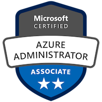
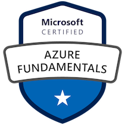
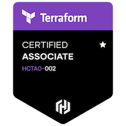
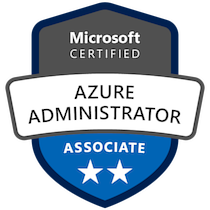
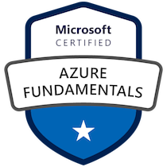
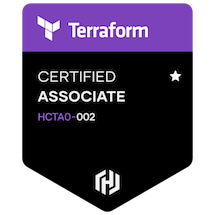

Jack Huddlestone
Platform Engineer
📒 Summary
I possess over ten years experience working within the IT industry, working predominantly with Azure during the last five. In my current role I assist customers in designing, building and maintaining solutions that emphasises security, efficiency, and scale. I'm passionate about leveraging cloud technology to solve complex business challenges and drive digital transformation.
My approach combines technical expertise with practical business understanding, ensuring deliverables exceed technical requirements whilst achieving measurable business outcomes. I'm an absolute advocate for automation and approach every challenge with an optimization mindset, identifying opportunities to enhance processes and reduce manual intervention.
I focus on empowering colleagues through knowledge sharing and mentorship, enabling us to deliver value faster and safer while maintaining strong security and compliance standards.
🛠️ Skills
- Cloud Providers: AWS, Azure
- Operating Systems: Linux (RHEL, Debian), Windows Server
- Tools: Ansible, Azure DevOps, Bash, Docker, GitHub, Harbor, PowerShell, Python, Terraform
👨💻 Experience
📍 Platform Engineer, Littlefish
December 2022 - Present
- Assist various customers in optimizing and securing their Azure estate. Proactively raise work items that encourage best practice, save cost, or can be potentially automated.
- Implement automated deployment processes through CI/CD. Creating numerous templates that can be later reused in future pipelines.
- Drive internal work practices towards a more agile approach. Implementing Azure Boards to track and monitor longer running pieces of work.
- Write various PowerShell scripts to assist team in troubleshooting, auditing and automating tasks.
- Utilize Ivanti and ServiceNow to work on assigned incidents and NSRs, ensuring service level agreements are met.
- Point of contact for Azure, Azure DevOps, Terraform and PowerShell escalations.
📍 Cloud Engineer, Joules
June 2021 - December 2022
- Spearheaded the implementation of Azure DevOps within the Infrastructure Team.
- Built a CI/CD workflow from the ground up using YAML pipelines within Azure DevOps and wrote several Terraform modules to successfully migrate infrastructure previously hosted by a third party to Joules’ Azure subscriptions.
- Cost optimize, troubleshoot, and manage our AWS and Azure estate.
- Write over 90 PowerShell scripts to automate tasks and assist the Infrastructure team in auditing and troubleshooting. All stored and version controlled with Azure DevOps.
- Create comprehensive documentation, including video demonstrations.
- Be on support one day a week as part of the infrastructure team, supporting various systems including SCCM, SCOM, D365, Datto, M365, Veeam, VMware, Fortinet, Sophos, Mimecast, Wordpress, Meraki.
📍 IT Manager, Arrow Conveyancing
February 2020 - June 2021
- Write various scripts to automate numerous tasks and solve problems presented to me, such as login auditing, accessing data from legacy applications, and AML auditing.
- Develop an internal post-room web application, written in Python.
- Management of both AWS and on-premises infrastructure.
- Manage helpdesk, ensure all tickets meet SLAs.
- Liaise and build solid relationships with third parties.
📍 Senior Engineer, Arrow Conveyancing
May 2017 - February 2020
- Write a successful proposal for the company to migrate to AWS.
- Troubleshoot ticket escalations and ensure they are resolved within SLA.
- Support and mentor first-line technicians.
- Perform out-of-hours support and maintenance when required.
- Write and review documentation.
🏆 Certifications

 




